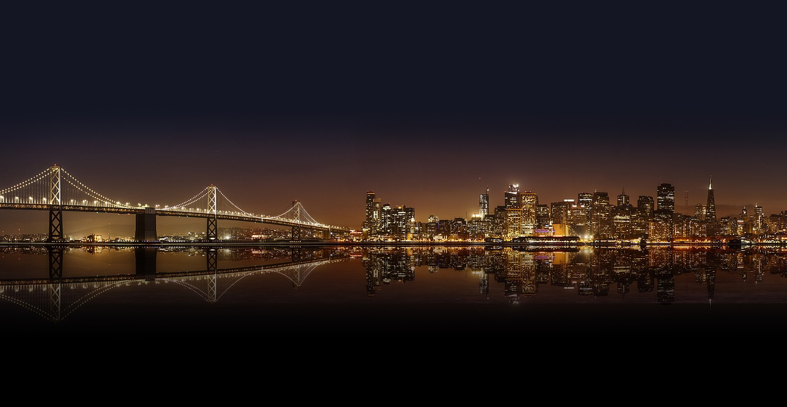

San Francisco was founded in 1776 as the Spanish settlement of El Pueblo de San Francisco de Asís. It became part of Mexico in 1821 before being ceded to the United States in 1848. The discovery of gold that same year sparked the California Gold Rush, rapidly transforming San Francisco into a booming city with a diverse population of immigrants from around the world. In 1906, a devastating earthquake and subsequent fires destroyed much of the city, prompting large-scale rebuilding and modernization. During the 1960s, San Francisco became a center of counterculture and social movements, particularly in the Haight-Ashbury neighborhood. In recent decades, the city has been shaped by the rise of the technology industry and its proximity to Silicon Valley, maintaining its role as a major cultural, economic, and technological hub in the United States.
Popular Neighborhoods
- Fisherman’s Wharf: Famous for seafood, shops, and attractions like Pier 39.
- Mission District: Known for its vibrant murals, cultural diversity, and trendy restaurants.
- Chinatown: One of the oldest and largest Chinese communities outside Asia.
- Haight-Ashbury: Historic district tied to the 1960s counterculture movement.
- SoMa (South of Market): Home to tech companies, Alcatraz Island, and nightlife.
Top Tourist Attractions
- Golden Gate Bridge: Iconic suspension bridge connecting San Francisco to Marin County.
- Alcatraz Island: Historic former prison located in the bay.
- Lombard Street: Known as the “crookedest street in the world.”
- Golden Gate Park: Huge urban park with gardens, Alcatraz Island, and recreational areas.
- Painted Ladies: Famous Victorian houses with views of the city skyline.
Close Details
| Type | State | Population | Landmarks |
|---|---|---|---|
| Detail1 | California | 880,000 | Golden Gate Bridge |
| Detail2 | West of the US | Very diverse | Alcatraz Island |